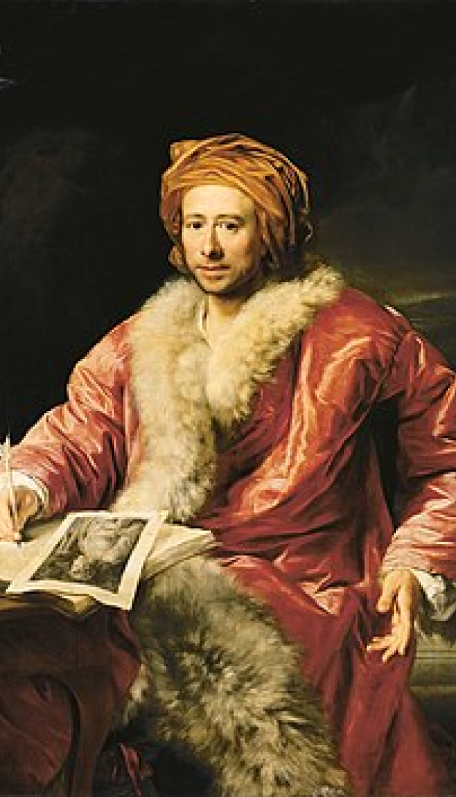
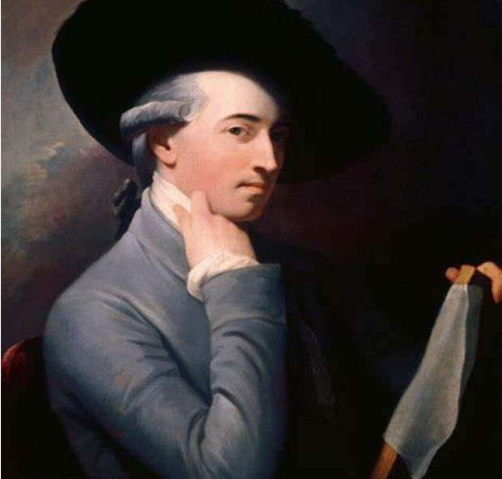
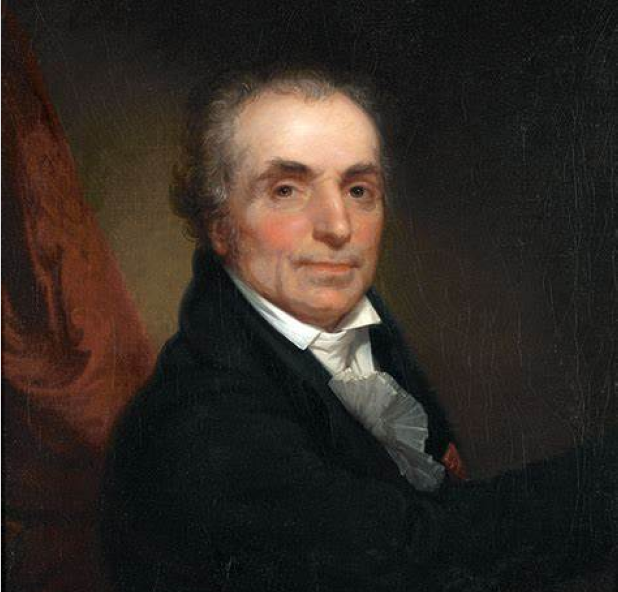
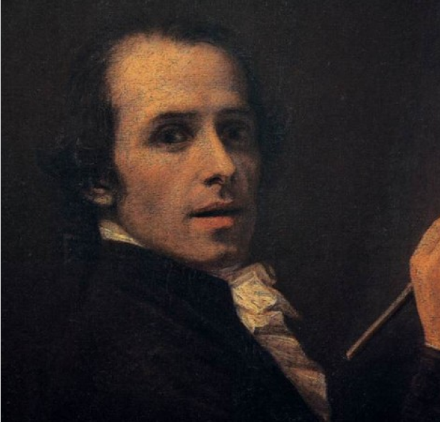
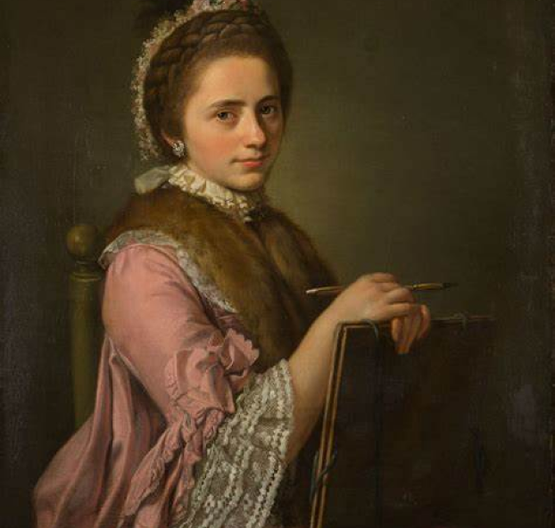
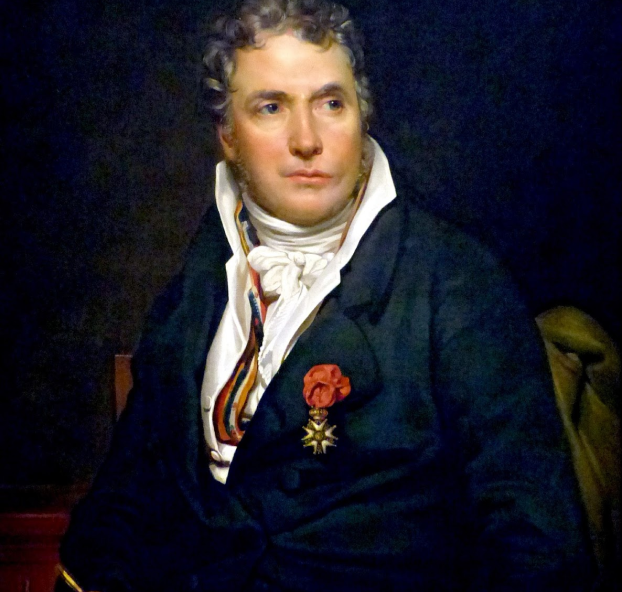
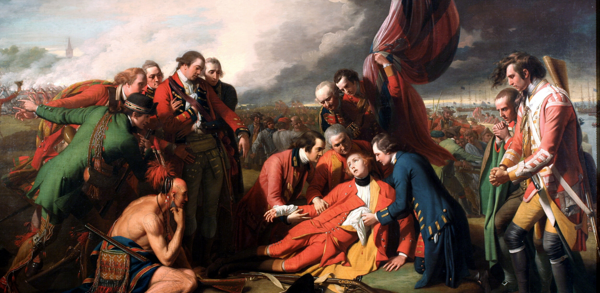
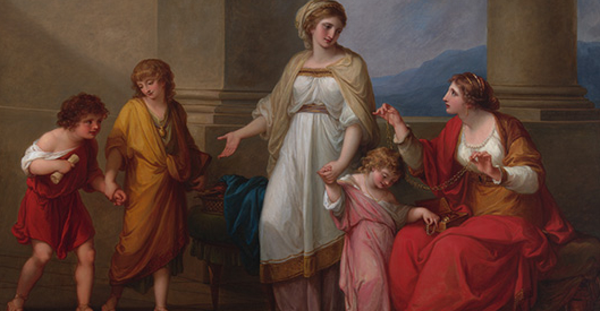
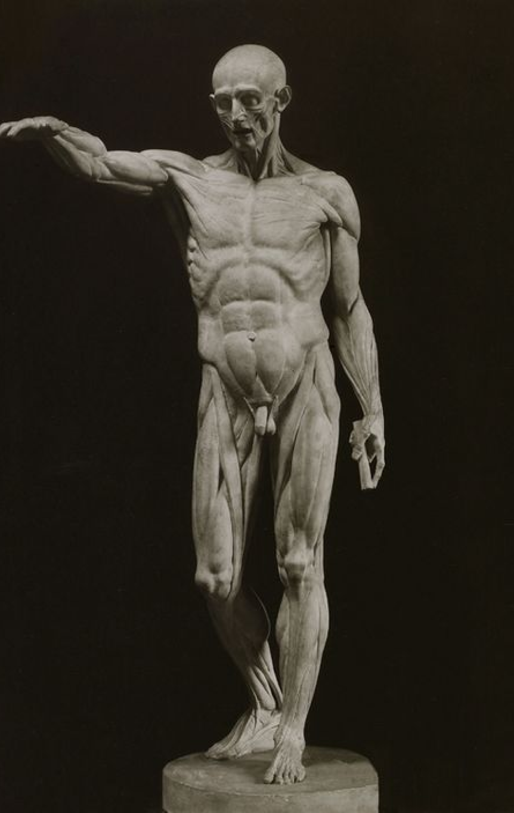
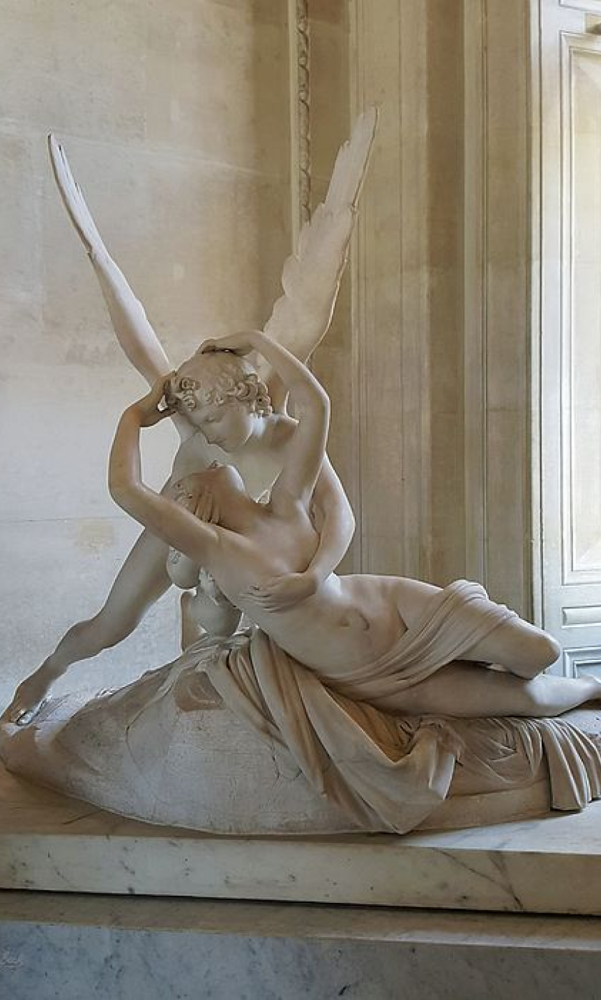

Origin & History
Relevant Figures
Paintings
NEOCLASSICA

The Neoclassic Period
A peek into
Neoclassicm

"The one way for us to become great, perhaps inimitable, is by
imitating the ancients."
The Father of Archeology
Johann Winckelmann 1717 - 1768
Origin & History
Neoclassicism is somewhat a descendant of the classical era and is a
resurrection of numerous aesthetics from the classical period. The era’s
rise could be seen starting around the mid 18th century.
The Movement was encouraged by Johann Winckelmann, a German
archaeologist and art historian whose writings revived interest in
classical art among the general public and had a key role in inspiring
the Neoclassical movement in the arts.
For example, He wrote a book named which was named “Reflections on the
Painting and Sculptures of the Greeks” containing the Greek ideal in
education and arts.
Another one was named “History of the Art of Antiquity” which
contained descriptions of ancient arts. Including ones such as the
classical era.
Both texts are a few examples of how Johann’s writings were able to
increase the Neoclassic art movement’s popularity. And inspire others
to go along with it.

Benjamin West - 1738 ~ 1820
American-British Painter
Born in Pennsylvania, Benjamin was said to have developed interest in
art at a very young age. It was said that later in his life, Benjamin
had traveled unto Italy to learn under the “Old Masters”. He even
toured to places such as Rome, Florence, and Venice to develop his
artistic skills. Eventually became King George’s III Royal Painter.
And dear friend.
Relevant Figures

Jean-Antoine Houdon - 1741 ~ 1828
French Sculptor
Jean grew up around artists, this may have been a deciding factor for his interest in arts. He was also a skilled sculptor that eventually gained apprenticeship to the sculptor Michel Ange Slodtz. He also opened a foundry in which he would create artworks. These were marked with personalized red wax seals for the sake of authenticity.

Antonio Canova - 1757 ~ 1822
Italian Sculptor
Antonio was an artist that greatly praised mythological subjects,
idealized proportions and balanced forms of classical sculpture.
Moreover, he developed interest in sculpting at a very young age due
to his father’s occupation (Stone mason, Sculptor, owned a Marble
quarry). He was also one of the many artists that was inspired by
Johann Winkelmann’s writings.

Angelica Kauffman - 1741 ~ 1807
Swiss Painter
Angelica was seen as a “Child Prodigy” in the field of painting, it
has also been mentioned she was skilled in music. But it seems she
preferred the path of an artist.
Like most young aristocrats, Angelica went on the “Grand Tour” along
with her father in order to build her artistic skills and develop a
deeper understanding in this subject.

Jacques-Louis David - 1748 ~ 1825
French Painter
Defied his family’s expectations of him pursuing the path of an
architecture or doctor and chose to be an artist. Eventually, Jacques
would come to be one of the most well known Neoclassical artists. Many
say this due to his artworks closely embodying the themes and elements
of the Classical era. Additionally it was said that he was supportive
of the French revolution through the usage of his artworks
 1784
Oath of the Horatii - Jacques-Louis David
1784
Oath of the Horatii - Jacques-Louis David
The painting represents the three Horatii brothers taking an oath
before partaking in a duel against the Curatii brothers. This duel
was arranged between Rome and Alba, in order to settle a dispute
without going to war.
In the painting the women are weeping, this is because they cannot stop the duel from occurring. What's tragic about this is that one is married to a Horatii and another is betrothed to a Curatii that is both participating the battle.
For its art characteristics, Neoclassicism favored usage of symmetry,
straight lines, geometric shapes, and minimal coloring use for its
artworks. Moreover, attributes such as being Serious, Virtuous,
Orderly, Heroic, and Classical subject matter were also common within
these artworks. And the medium for such things usually were Paintings,
Sculptures, and Architecture. But of course, they were not limited to
these.
Paintings

1770
The Death of General Wolfe - Benjamin West
“The Death of General Wolfe, oil painting created in 1770 by
artist Benjamin West, depicting the death of British Major General
James Wolfe during the 1759 Battle of Quebec. The monumental
Neoclassical painting is one of the artist’s best known works as
well as one of the most famous paintings of the 18th century.”

1785
Cornelia Pointing to her Children as Her Treasures - Angelica
Kauffman
“Painted in 1785, Cornelia, Mother of the Gracchi, Pointing to Her
Children as Her Treasures, is her subject. Roman architectural
influences frame two women portrayed wearing what one can imagine is
typical of ancient Roman dress, along with three children, also
wearing masterfully draped togas with thin leather sandals.”

1769
L’Ecorche - Jean-Antoine Houdon
“Houdon's L'Ecorché is a life-size sculpture of a flayed man. A
striking anatomical figure, his entire muscular system is exposed as
he stands with left foot forward and right leg slightly bent; his
right hand is raised up and reaching out in an almost healing
gesture. In describing the impact of this work, art historian Anne
L. Poulet states, "Houdon's figure of an Ecorché is one his
earliest, most famous, and most widely reproduced works".”

1777
Psyche Revived by Cupid's Kiss - Antonio Canova
“Antonio Canova's sculpture, Psyche Revived by Cupid's Kiss, was
inspired by a Roman painting that was found in Herculaneum during his
visit to Naples in 1787. The sculpture is considered a masterpiece of
Neoclassical style but also has the mythological elements of emotional
lovers, a clear sign of the emerging movement of Romanticism.”